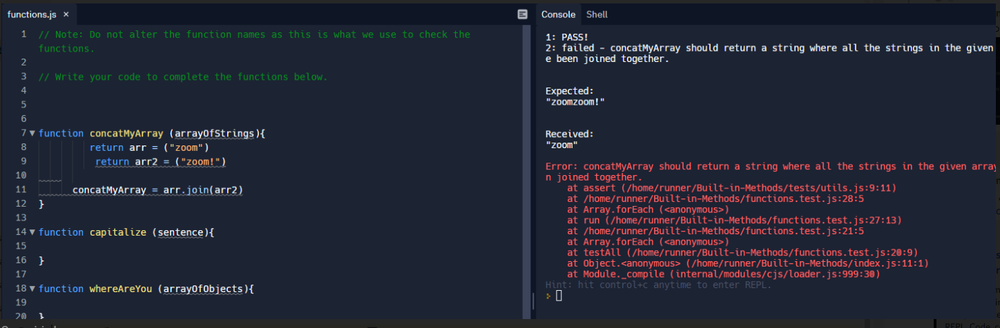

Other Blogs
- HTML-CSS Blog
- Learning Plan
- Identity-Values
- JavaScript-Blog
- Emotional intelligence-Blog
- Neuroplasticity-Blog
- Problem-Solving
- Foundations Reflections
Problem Solving
A time I was blocked by a simple problem:
Javascript is challenging, maybe because I am learning it for the first time. I was struck several times during the JavaScript Kata challenge. I tried breaking it down into smaller parts and kept trying. While doing Built-in Methods, I was struck with concatMyArray functions for a few hours, I finally reached out for help on discord, and a fellow student helped me solve this. I was a bit confused and frustrated throughout the process. But this is common when learning something new. In the end, I completed the challenge and am happy now.

2. Elegantly solved a problem.

I can't think of a time when I could elegantly solve the problem. Every task involved a lot of help from Mr Google. I think that's how we all learn. I am happy that I managed to complete the tasks and looking forward to the next sprint.
3. Reflect on how confident you feel using each of these problem-solving techniques/processes:

I want to represent my confidence on a scale of 1 to 5 Stars. One ★ being no confidence and five ★ being very confident.
| Pseudocode | ★ ★ ★ |
| Trying something | ★ ★ ★ |
| Rubber ducky method | ★ ★ ★ |
| Reading error messages | ★ ★ |
| Console.logging | ★ ★ ★ |
| Googling | ★ ★ ★ ★ |
| Asking your peers for help | ★ ★ ★ ★ |
| Asking coaches for help | ★ ★ ★ ★ |
| Improving your process with reflection | ★ ★ ★ |